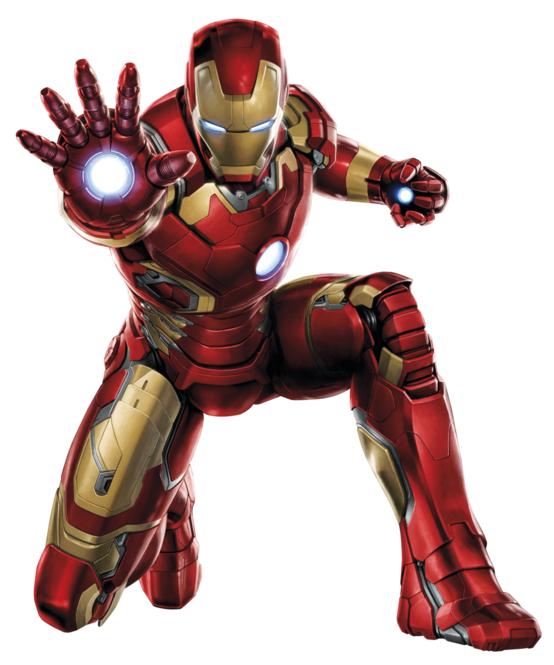

A superhero is a person who does heroic deeds and has the ability to do them in a way that a normal person couldn’t. So in order to be a superhero, you need a power that is more exceptional than any power a normal human being could possess, and you need to use that power to accomplish good deeds. Otherwise, a policeman or a fireman could be considered a superhero.
For instance, a good guy fighting a bad guy could be just a regular police story or detective story or human-interest story. But if it’s a good guy with a superpower who is fighting a bad guy, it becomes a superhero story. If the good guy is doing something that a normal human being couldn’t do, couldn’t accomplish, then I assume he becomes a superhero.
Article on superheroes at OUP blog

Iron Man
Young Tony Stark was a prodigy of mechanical engineering genius. At 21, he took over his father's company and launched it into a hugely successful corporation. During a testing of new technology in Vietnam, Tony was hit by a piece of shrapnel from a booby trap. The shrapnel was lodged near his heart and without help, Tony would die.